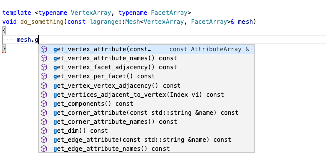

Autocompletion With Clangd
Are you coding in a text editor like Vim/NeoVim, VSCode, Sublime, and miss powerful IDE features such as provided by Visual Studio? The new kid in the block for intelligent autocompletion and smart code editing is clangd.
Retrieve LLVM and Clangd
clangd is part of the LLVM project, so it should be present on your machine if you have a local installation of llvm-clang. However, due to certain issues with header-only code completion, as of today (05-18-20) we need to compile LLVM from source and patch it manually for it to work well with Lagrange:
-
Clone the LLVM git repository (we used
7ee479a76as of this writing)git clone --depth 1 https://github.com/llvm/llvm-project.git cd llvm-project -
Download and apply patch for this issue (if still applicable)
wget https://reviews.llvm.org/file/data/p524ff355qzqwqvmqoiy/PHID-FILE-agyvgty5nzpa5wvyoice/D78038.diff git apply D78038.diff -
Build clang and clangd:
You can change the install directory frommkdir build cd build cmake -G Ninja -DCMAKE_BUILD_TYPE=Release -DCMAKE_INSTALL_PREFIX=/usr/local/opt/llvm-git lang -DLLVM_ENABLE_PROJECTS="clang;clang-tools-extra;libcxx;libcxxabi;polly;lldb;lld;compiler-rt" ../llvm ninja ninja install/usr/local/opt/llvm-gitto suit your preference.
Install Editor Plugin For Clangd
Please check out the clangd website for instructions on how to install the clangd plugin for your favorite editor. In this tutorial we will use VSCode. Users of Vim/NeoVim can also check out coc.vim.
For the VSCode plugin, do not forget to set the clangd path to the binary compiled in the previous
step:
"clangd.path": "/usr/local/opt/llvm-git/bin/clangd"
Also the compile_commands.json file should be in your project root folder, and the default
Microsoft C/C++ plugin (Intellisense...) must be uninstalled or disabled.
Configure Your Project
CMake
Make sure you configure your CMake project with the following options:
# Generates a `compile_commands.json` that can be used for autocompletion
set(CMAKE_EXPORT_COMPILE_COMMANDS ON CACHE BOOL "Enable/Disable output of compile commands during generation.")
# Use a specific C/C++ compiler, e.g. llvm-clang on macOS (so we can use clangd)
set(CMAKE_C_COMPILER "/usr/local/opt/llvm-git/bin/clang" CACHE STRING "C compiler" FORCE)
set(CMAKE_CXX_COMPILER "/usr/local/opt/llvm-git/bin/clang++" CACHE STRING "C++ compiler" FORCE)
You can also pass those options via the command line when you first configure your project (cmake
-DCMAKE_CXX_COMPILER=<...> ..). For Lagrange, you can put those lines in a file
LagrangeOptions.cmake at the root of the repository. When configuring your own CMake project, make
sure the CMAKE_CXX_COMPILER cache variable is set before the first call to project() in your
CMake script.
Xcode
If you have an xcode project (generated by gyp or metabuild) for example, you can use xcpretty to
generate the compile_commands.json (thanks to this
link).
- Install xcpretty
sudo gem install xcpretty. - Clean up your project
xcodebuild clean -project /path/to/project.xcodeproj -scheme main/scheme/name - Generate the compile commands
xcodebuild -project /path/to/project.xcodeproj -scheme main/scheme/name | xcpretty -r json-compilation-database -o compile_commands.json
Better Completion Database
By default, the compile_commands.json generated by CMake only contains compilation instructions
for each translation unit in your project. We will use compdb
to generate a new compilation database that includes header files.
-
Install compdb using pip:
You can also install compdb via conda using the following environment:pip install --user compdbname: compdb dependencies: - python=3.7 - pip - pip: - compdb -
Generate a new completion database containing header files:
This last step needs to be re-run anytime you add a new file to your project, or change any compilation options.python -m compdb -p /folder/containing/initial/compile_commands.json list > compile_commands.json
Enjoy!
